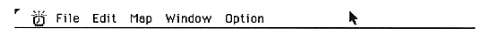
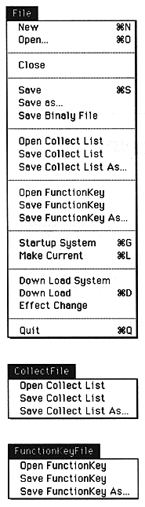

Return to previous page ｜ Return to menu ｜ Go to next page
-
2. How to use the sound simulator
- This section describes the function and usage of each item in the Sound Simulator menu.
-
Menu bar
- There are five menus in the sound simulator menu bar.

-
File menu
When the - File menu is opened, the following display appears.

The File menu is used to open and save the sound area map.
Return to previous page ｜ Return to menu ｜ Go to next page